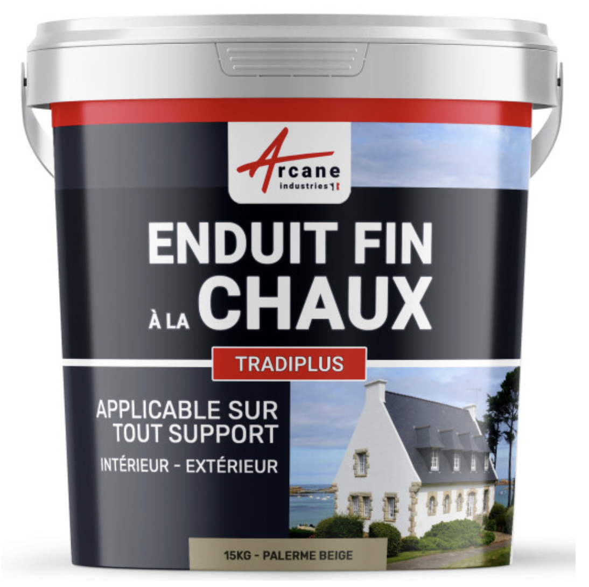

Accueil
Cours
Videos
À propos
Retour
QCM précédent
QCM suivant
QCM : Matériaux de Carrière - Auto-évaluation
La chaux
1. Quelle est la matière première principale de la chaux ?
A) La silice
B) La kaolinite
C) Le calcaire
D) La dolomie
Commentaire:
La chaux est produite à partir du calcaire (CaCO
3
), qui est chauffé à haute température pour obtenir de la chaux vive (CaO) par décarbonatation, libérant du dioxyde de carbone (CO
2
).
2. Quelle est la formule chimique de la chaux vive ?
A) MgO
B) CaO
C) CaCO
3
D) Ca(OH)
2
Commentaire:
La chaux vive a pour formule chimique CaO, ou oxyde de calcium. Elle est obtenue par décarbonatation du calcaire (CaCO
3
) chauffé à environ 900-1000 °C.
3. Quelle est la formule chimique de la chaux éteinte ?
A) CaCO
3
B) Ca(OH)
2
C) Mg(OH)
2
D) CaO
Commentaire:
La chaux éteinte, ou hydroxyde de calcium, a pour formule chimique Ca(OH)
2
. Elle est obtenue en hydratant la chaux vive (CaO) avec de l'eau dans une réaction exothermique.
4. Comment s'appelle le minéral de la chaux éteinte ?
A) La calcite
B) L'aragonite
C) La portlandite
D) La magnésite
Commentaire:
Le minéral de la chaux éteinte (Ca(OH)
2
) est appelé portlandite. Il se forme par hydratation de la chaux vive (CaO).
5. Comment s'appelle la réaction chimique qui aboutit à la formation de chaux vive ?
A) La calcination
B) La combustion
C) L'hydratation
D) La carbonatation
Commentaire:
La calcination est la réaction chimique de décarbonatation par laquelle le calcaire (CaCO
3
) est chauffé pour produire de la chaux vive (CaO) et du dioxyde de carbone (CO
2
). Cette réaction se produit à des températures de 900 à 1000 °C.
6. À quelle température se fait la décarbonatation dans un four à chaux ?
A) Entre 500 et 600 °C
B) Entre 1200 et 1400 °C
C) Entre 900 et 1000 °C
D) Entre 100 et 200 °C
Commentaire:
La décarbonatation du calcaire (CaCO
3
) dans un four à chaux se fait à une température comprise entre 900 et 1000 °C, permettant la formation de chaux vive (CaO) et de dioxyde de carbone (CO
2
).
7. Quelle est la masse de CO
2
relâchée pour produire de la chaux vive à partir d'un kilogramme de calcaire ?
A) 220 g
B) 1000 g
C) 120 g
D) 440 g
Commentaire:
Lors de la décarbonatation, environ 44 % de la masse du calcaire (CaCO
3
) est libérée sous forme de CO
2
. Pour 1 kg de calcaire, cela représente 440 g de CO
2
. Cela est facilement déterminé quand on sait que la masse molaire molaire du CaCO
3
est de 100 g/mole, tandis que la masse molaire du CO
2
est de 44 g/mol.
8. Quels sont les deux grands types de chaux ?
A) Chaux organique et chaux inorganique
B) Chaux calcaire et chaux magnésienne
C) Chaux aérienne et chaux hydraulique
D) Chaux vive et chaux éteinte
Commentaire:
Les deux grands types de chaux sont la chaux aérienne, qui durcit au contact de l'air, et la chaux hydraulique, qui durcit au contact de l'eau. Cette distinction est liée à leur composition et à leurs modes de prise.
9. Comment fonctionne la prise de la chaux aérienne ?
A) Par réaction avec la chaleur
B) Par absorption de CO
2
de l'air
C) Par cristallisation de minéraux
D) Par réaction avec l'eau uniquement
Commentaire:
La chaux aérienne (Ca(OH)
2
) durcit en absorbant le CO
2
de l'air, ce qui entraîne la formation de calcite (CaCO
3
). Ce processus est appelé carbonatation.
10. Comment fonctionne la prise de la chaux hydraulique ?
A) Par absorption de CO
2
de l'air
B) Par évaporation de l'eau
C) Par exposition à la chaleur
D) Par réaction chimique avec l'eau
Commentaire:
La chaux hydraulique durcit grâce à une réaction chimique avec l'eau, appelée prise hydraulique. Cette réaction se produit même en milieu humide, ce qui la rend adaptée à des environnements humides ou submergés. Elle contient des silicates et aluminates, responsables de cette propriété.
11. Avec quelles roches fabrique-t-on de la chaux hydraulique ?
A) Des calcaires magnésiens
B) Des calcaires purs
C) Des calcaires argileux
D) Des calcaires et des évaporites
Commentaire:
La chaux hydraulique est fabriquée à partir de calcaires argileux, qui contiennent une proportion significative d'argiles (silicates et aluminates). Lors de la cuisson, ces composés réagissent pour donner des propriétés hydrauliques à la chaux.
12. Qu'est-ce que l'on appelle l'hydraulicité de la chaux ?
A) Sa capacité à durcir en présence d'eau
B) Sa capacité à chauffer rapidement
C) Sa résistance à l'absorption de CO
2
D) Sa capacité à rester liquide plus longtemps
Commentaire:
L'hydraulicité de la chaux désigne sa capacité à durcir en présence d'eau, grâce à la réaction chimique des silicates et aluminates contenus dans la chaux hydraulique. Ce phénomène permet son utilisation en milieu humide ou immergé.
13. Qu'est-ce que l'on appelle le chaulage ?
A) La production de chaux vive à partir de calcaire
B) Le processus de cuisson du calcaire
C) L'application de chaux pour modifier les propriétés du sol
D) La réaction chimique entre la chaux et l'eau
Commentaire:
Le chaulage est l'application de chaux, généralement sous forme de chaux éteinte ou vive, pour améliorer les propriétés chimiques, physiques ou biologiques du sol, notamment en régulant son acidité et en favorisant son enrichissement en calcium.
14. La chaux qui est achetée dans le commerce pour les besoins du bâtiment, c'est de la chaux vive ou de la chaux éteinte ?

×
A) De la chaux vive
B) De la chaux éteinte
C) De la chaux hydraulique uniquement
D) De la chaux magnésienne
Commentaire:
La chaux utilisée dans le bâtiment est généralement de la chaux éteinte (Ca(OH)
2
), car elle est plus sûre et facile à manipuler. La chaux vive (CaO) est plus réactive et dangereuse, et son usage nécessite des précautions spécifiques.
15. Comment obtient-on de la chaux éteinte à partir de la chaux vive ?
A) En ajoutant de l'eau à la chaux vive
B) En mélangeant avec du sable
C) En exposant la chaux vive à l'air libre
D) En chauffant à haute température
Commentaire:
La chaux éteinte (Ca(OH)
2
) est obtenue en ajoutant de l'eau à la chaux vive (CaO) dans une réaction exothermique appelée hydratation. Cette réaction libère beaucoup de chaleur et doit être réalisée avec précaution.
16. Quelles sont les précautions d'usage de la chaux vive ?
A) Aucune. La chaux vive est un produit naturel
B) Porter un masque
C) Porter des lunettes
D) Porter des gants
Commentaire:
La chaux vive (CaO) est très réactive et peut causer des brûlures en cas de contact avec la peau ou les yeux. Il est essentiel de porter des gants, des lunettes de protection et un masque pour éviter les irritations et l'inhalation de poussières. Lors de son mélange avec de l'eau, il faut ajouter la chaux progressivement pour contrôler la réaction exothermique.
17. Quelles sont les précautions d'usage de la chaux éteinte ?
A) Porter des gants
B) Porter des lunettes
C) Aucune. La chaux éteinte est un produit naturel
D) Porter un masque
Commentaire:
Bien que moins dangereuse que la chaux vive, la chaux éteinte (Ca(OH)
2
) peut provoquer des irritations cutanées, oculaires ou respiratoires. Il est recommandé de porter des gants, un masque et des lunettes de protection pour éviter l’exposition aux poussières, surtout lors de son mélange ou de son application.
18. Quelle est la bonne manière de mélanger de l'eau avec de la chaux vive ?
A) Ajouter la chaux vive progressivement à l'eau tout en remuant
B) Verser toute l'eau d'un coup sur la chaux vive
C) Mélanger rapidement avec les mains pour une meilleure répartition
D) Ajouter la chaux vive à l'eau sans remuer pour éviter les éclaboussures
Commentaire:
La bonne manière de mélanger de l'eau avec de la chaux vive est d'ajouter la chaux vive progressivement à l'eau tout en remuant. Cette méthode permet de contrôler la réaction exothermique, qui génère beaucoup de chaleur. Il est crucial de porter des équipements de protection pour éviter les brûlures et les projections.
19. Qu'est-ce que le lait de chaux ?
A) Un mélange de chaux et de sable pour le bâtiment
B) Une solution de chaux vive dissoute dans l'eau
C) Une suspension de chaux éteinte dans de l'eau
D) Une pâte obtenue en mélangeant de la chaux vive avec peu d'eau
Commentaire:
Le lait de chaux est une suspension de chaux éteinte (Ca(OH)
2
) dans de l'eau. Il est utilisé pour le badigeon, la désinfection ou le chaulage des sols. Cette préparation nécessite une agitation pour maintenir la suspension homogène.
20. Est-ce que la chaux éteinte se conserve indéfiniment à l'air libre ?
A) Non, elle s’évapore progressivement
B) Oui, à condition de la protéger de l'humidité
C) Oui, elle est chimiquement stable à l'air libre
D) Non, elle réagit avec le CO
2
de l'air pour former de la calcite
Commentaire:
La chaux éteinte (Ca(OH)
2
) ne se conserve pas indéfiniment à l'air libre. Elle réagit lentement avec le dioxyde de carbone (CO
2
) de l'air pour se transformer en calcite (CaCO
3
), ce qui la rend moins efficace pour ses usages spécifiques.
21. Avec quoi fait-on un mortier à la chaux ?
A) Avec de la chaux, du gravier et de l'eau
B) Avec de la chaux, du sable et de l'eau
C) Avec de la chaux, de l'argile et de l'eau
D) Avec de la chaux, du ciment et de l'eau uniquement
Commentaire:
Un mortier à la chaux est fabriqué en mélangeant de la chaux (éteinte ou hydraulique), du sable et de l'eau. Le sable apporte la texture et le volume, tandis que la chaux assure la liaison. Selon les besoins, on peut ajuster les proportions pour la résistance ou l’esthétique.
22. Pour quels usages emploie-t-on de la chaux aérienne ?
A) Pour les fondations en béton armé
B) Pour les enduits et les badigeons
C) Pour les ouvrages immergés
D) Pour les mélanges avec des ciments hydrauliques
Commentaire:
La chaux aérienne est principalement utilisée pour les enduits, les badigeons, et les travaux de finition en bâtiment. Elle offre une bonne perméabilité à la vapeur d'eau et une esthétique adaptée aux travaux traditionnels. Elle durcit lentement par absorption du CO
2
de l'air, ce qui la limite aux environnements secs ou peu humides.
23. Pour quels usages emploie-t-on de la chaux hydraulique ?
A) Pour les enduits intérieurs en milieu parfaitement sec
B) Pour les badigeons décoratifs uniquement
C) Pour les ouvrages en milieu humide ou immergé
D) Pour des mortiers utilisables en maçonnerie
E) Pour les mélanges à base de terre crue
Corriger
Recommencer